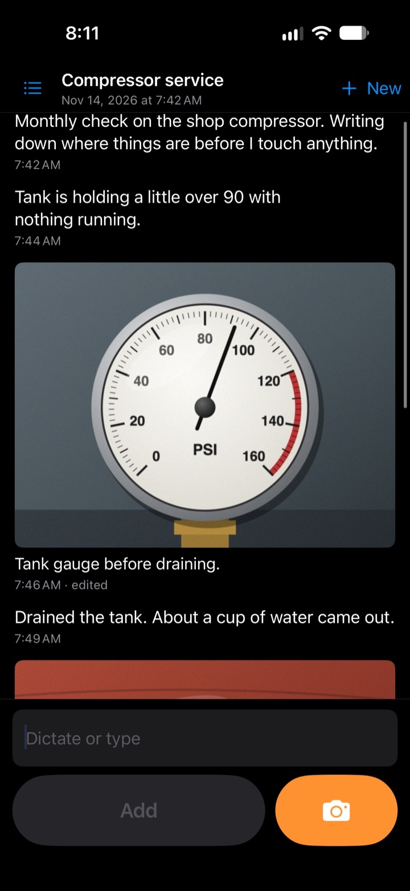
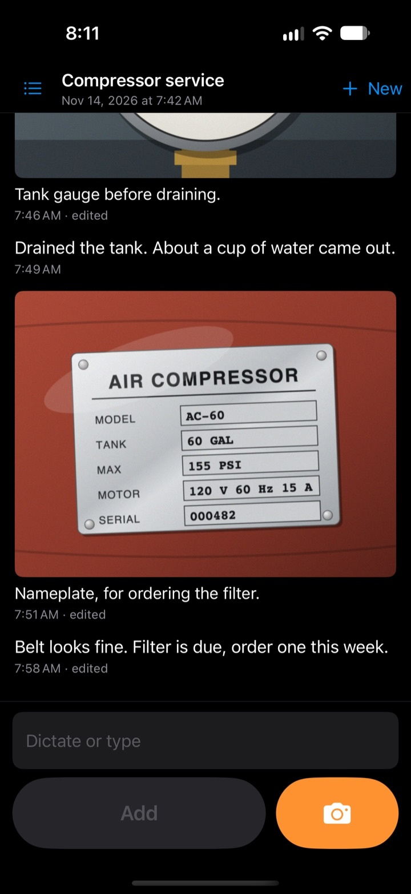
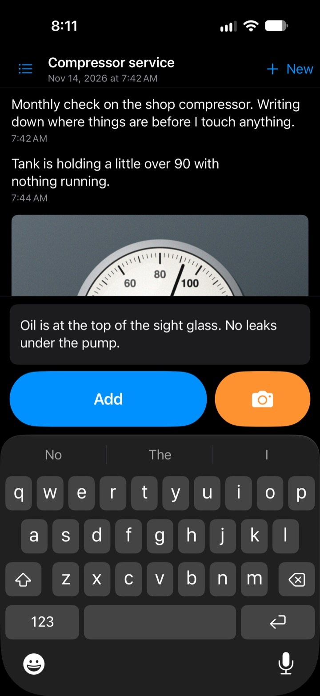
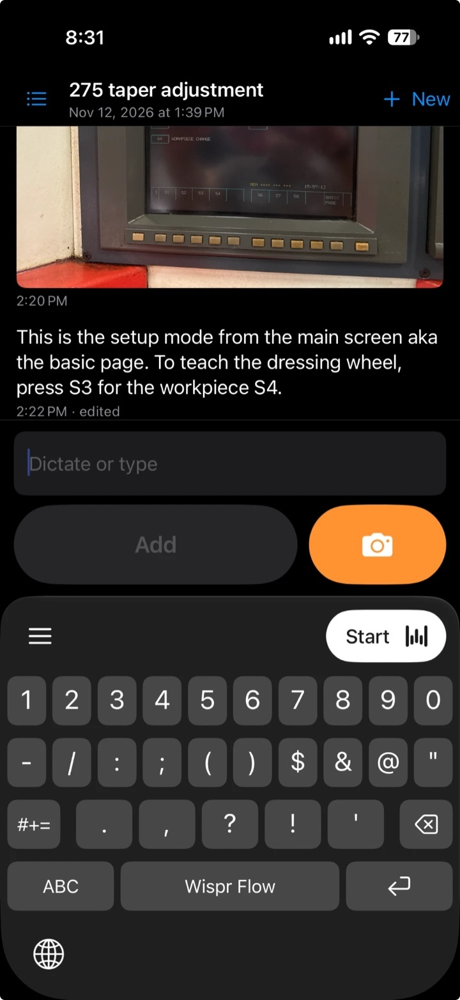
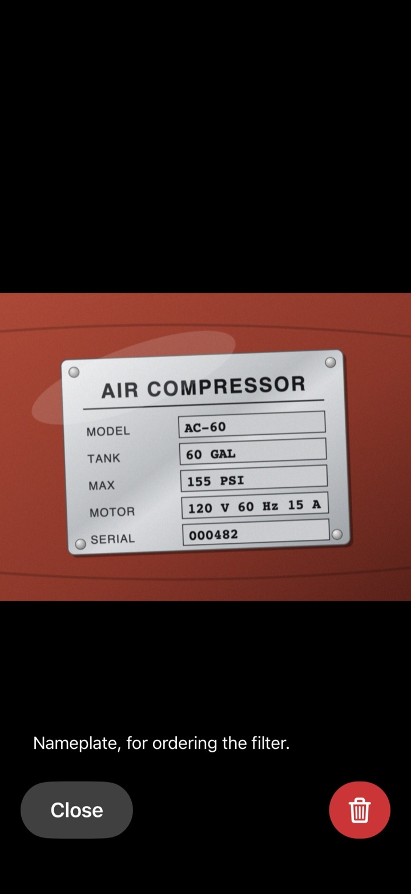
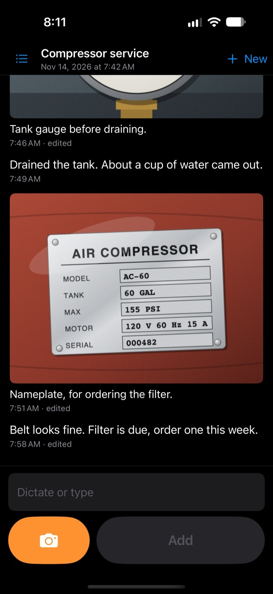

Notes with photos, as fast as you can take them.
Shop Capture is an iPhone app for getting down what you just saw while your other hand is busy. Say it, shoot it, go back to the part. That evening it is all on your computer, Windows or Mac, in order, with the times.
Sign up for the TestFlight betaiPhone, iOS 18 or later. Leave your email and you'll get the invite when the beta opens.

I work on a shop floor and pick my notes up later at a computer. Every tool I tried failed one of two ways: adding a photo took too many steps, or the text and the photos ended up in separate places. So I built this.
Photos
Two taps from the note to a saved photo.
Tap the camera button, tap the shutter. The photo is in the note and you are back where you were. There is no "Use Photo or Retake" step in between.
- Full resolution, saved as an ordinary JPEG
- Torch that stays on between shots
- Tap to focus, pinch to zoom
- The volume buttons fire the shutter
- A buzz you can feel when the photo lands

Text
Say it, read it back, fix it on the spot.
The text box is a plain one, so whatever keyboard you dictate with works in it, including third-party ones such as Wispr Flow. What you said shows up right away, so a bad transcription gets caught while you still remember what you meant.
While the keyboard is up it takes the bottom of the screen, so the text box, Add and the camera move up and sit right on top of it, with the note still in view above.
Every entry stays editable, today or next week. Editing never changes the time it was captured; the note just marks it as edited.


In order
Text and photos stay together, in the order they happened.
A note is one running sequence: text, photo, text, photo. Each entry carries the time it was captured.
Tap a photo to see it full screen and zoom in. Add a caption there and it stays attached to that photo, so there is no guessing later which line went with which picture.

One hand
Laid out for the hand that is holding the phone.
Tell the app which hand holds the phone. That is a different question from which hand you write with: a right-hander whose right hand is on the machine holds the phone in the left.
Add sits in the corner under your palm, where a stray press does nothing. The camera sits on the far side, out of the palm's way and still inside the thumb's reach.

Plain files
Your notes are files you can read without this app.
Each note is a folder holding one Markdown file and its JPEGs. They live in the app's own iCloud Drive folder, so they show up on your computer with no export step: in File Explorer on a Windows PC with Apple's free iCloud for Windows app (from the Microsoft Store), or in Finder on a Mac.
Open the folder in Obsidian, or any Markdown viewer, and the photos appear in line with the text. Edit a note on the computer and the app picks the change up. If the phone and the computer both change the same note while out of touch, the app is built to keep both versions and tell you.
So far it has been tested with a Mac. If you try it on Windows, I'd like to hear how it goes.
Shop Capture/ 2026-11-14_074210/ note.md photos/ 2026-11-14_074605.jpg 2026-11-14_075118.jpg
--- title: Compressor service created: 2026-11-14T07:42:10-06:00 --- <!-- block text 2026-11-14T07:44:31-06:00 --> Tank is holding a little over 90 with nothing running. <!-- block photo 2026-11-14T07:46:05-06:00 -->  Tank gauge before draining.
Small things that matter on the floor
Made for short bursts over a long shift.
The screen stays on
No unlocking between captures. After ten minutes untouched, or however long you set, the phone locks as usual.
Action button
An "Open capture" shortcut takes you straight to the note you were in. Put it on the iPhone's Action button.
Nothing to save
Every change is written as you make it. Lock the phone or switch apps and it is all there when you come back.
No signal needed
Capture never waits on the network. Without iCloud, notes stay on the phone and show up in the Files app.
Swipe to delete
Swipe a note for a Delete button, as in Mail. Deleted notes go to Recently Deleted in Files, not straight to nothing.
Pick up where you left off
The app opens to the last note, ready for the next entry. A new note starts only when you ask for one.
Privacy
No account. No analytics. No network code.
The app writes files. If iCloud Drive is on, iOS syncs them to your own iCloud account. Nothing is sent to us or anyone else, and nothing is collected.
Dictation is done by your keyboard, not by this app, so the app never asks for the microphone.
| The app asks for | Why |
|---|---|
| Camera | To take photos into a note. iOS asks the first time. |
| Its own iCloud folder | So notes appear on your computer. It cannot see the rest of your iCloud Drive. |
| Microphone | Never asked for. |
| Photo library | Never asked for. Photos go into the note's folder. |
| Location | Never asked for. |